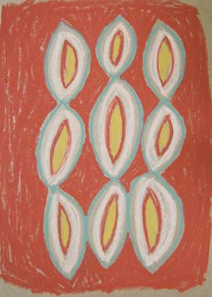
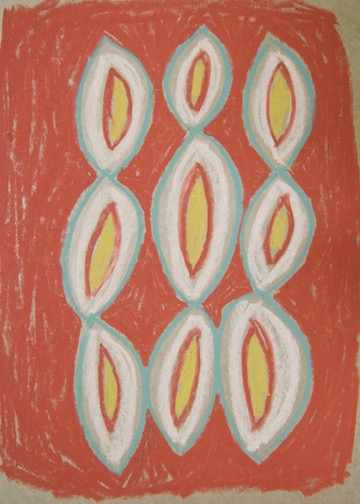
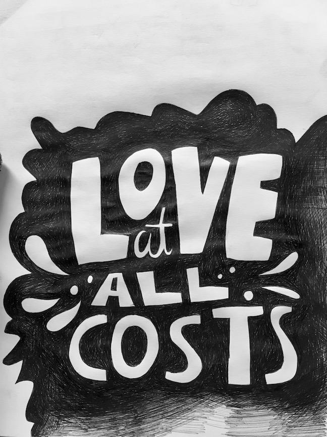
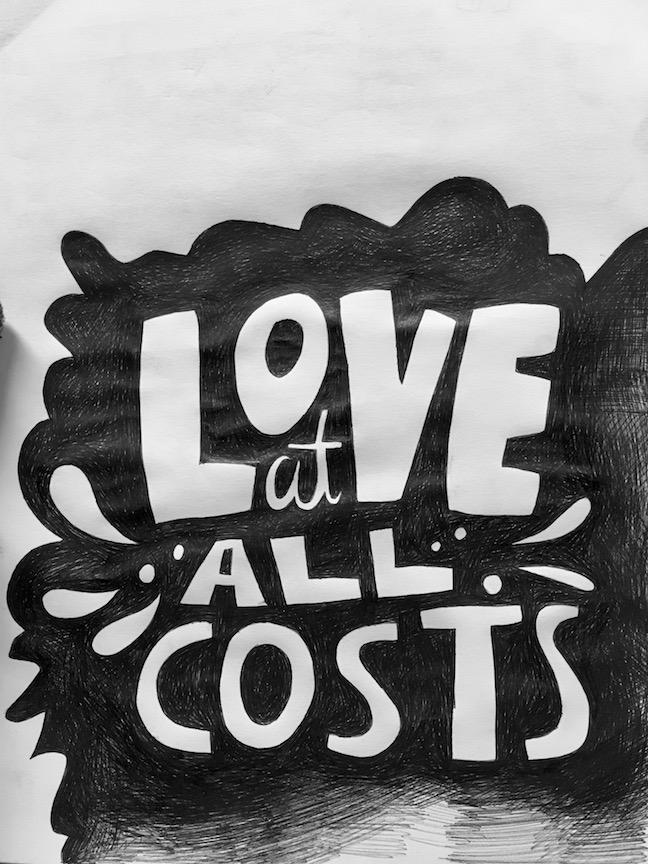

Oil Pastels
I had a serious obsession with oil pastels for a solid few months. Delft Blue was
in my veins... It is still one of my all time favourite mediums to work in.
 

Sketches
Here are some random sketches I've made recently. I usually doodle with cheap, medium papermate pens on
sketchbook paper. Sometimes I'll use coloured pencils or gel pens too, depends on what the day brings.
 

Crafts
I love making things with my hands and leanring new skills in the process. Shown here are thrifted mugs
that I drew on with an oil paint Sharpie. Below are felt ornaments I sewed for a craft sale I was in.
Photographs
Film & digital images I've taken over the years. I absolutely love film, but my
little Olympus is pretty great too. This is a hobby I'd like to get better at.